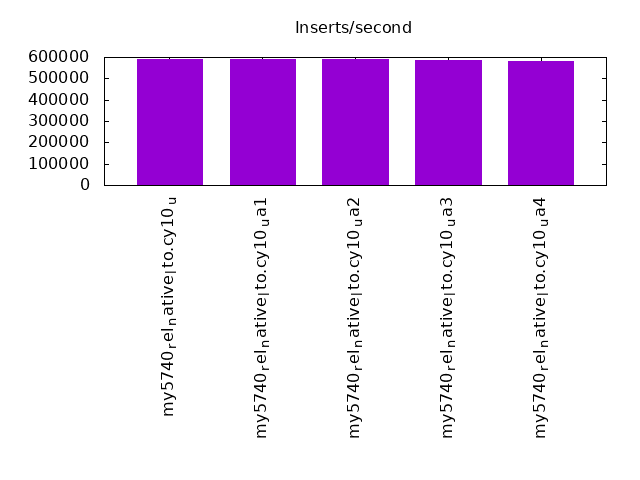
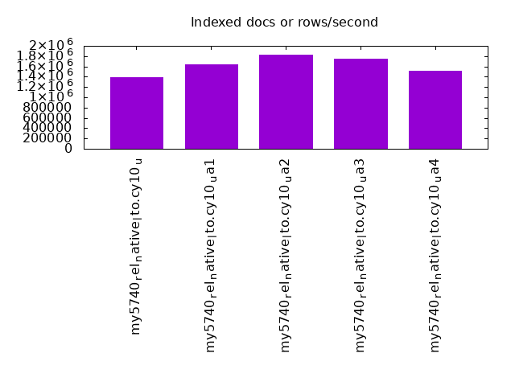

This is a report for the insert benchmark with 12000M docs and 24 client(s). It is generated by scripts (bash, awk, sed) and Tufte might not be impressed. An overview of the insert benchmark is here and a short update is here. Below, by DBMS, I mean DBMS+version.config. An example is my8020.c10b40 where my means MySQL, 8020 is version 8.0.20 and c10b40 is the name for the configuration file.
The test server has 80 cores with hyperthreads enabled, 256G RAM and fast storage. The benchmark was run with 24 clients and there were 1 or 3 connections per client (1 for queries or inserts without rate limits, 1+1 for rate limited inserts+deletes). There are 24 tables, with a client per table. It loads 12B rows without secondary indexes, creates secondary indexes, then inserts 120M rows with a delete per insert to avoid growing the table. It then does 3 read+write tests for 3600s each that do queries as fast as possible with 100, 500 and then 1000 inserts/second/client concurrent with the queries and 1000 deletes/second to avoid growing the table. The database is larger than memory.
The tested DBMS are:
The numbers are inserts/s for l.i0 and l.i1, indexed docs (or rows) /s for l.x and queries/s for q*.2. The values are the average rate over the entire test for inserts (IPS) and queries (QPS). The range of values for IPS and QPS is split into 3 parts: bottom 25%, middle 50%, top 25%. Values in the bottom 25% have a red background, values in the top 25% have a green background and values in the middle have no color. A gray background is used for values that can be ignored because the DBMS did not sustain the target insert rate. Red backgrounds are not used when the minimum value is within 80% of the max value.
| dbms | l.i0 | l.x | l.i1 | q100.1 | q500.1 | q1000.1 |
|---|---|---|---|---|---|---|
| my5740_rel_native_lto.cy10_u | 588351 | 1391316 | 26426 | 15354 | 14904 | 13400 |
| my5740_rel_native_lto.cy10_ua1 | 591920 | 1643399 | 16579 | 15783 | 16169 | 13955 |
| my5740_rel_native_lto.cy10_ua2 | 589507 | 1835720 | 25215 | 15513 | 15012 | 13467 |
| my5740_rel_native_lto.cy10_ua3 | 587688 | 1748521 | 25526 | 15525 | 14963 | 13349 |
| my5740_rel_native_lto.cy10_ua4 | 580664 | 1511728 | 12923 | 10122 | 9296 | 6451 |
This table has relative throughput, throughput for the DBMS relative to the DBMS in the first line, using the absolute throughput from the previous table. Values less than 0.95 have a yellow background. Values greater than 1.05 have a blue background.
| dbms | l.i0 | l.x | l.i1 | q100.1 | q500.1 | q1000.1 |
|---|---|---|---|---|---|---|
| my5740_rel_native_lto.cy10_u | 1.00 | 1.00 | 1.00 | 1.00 | 1.00 | 1.00 |
| my5740_rel_native_lto.cy10_ua1 | 1.01 | 1.18 | 0.63 | 1.03 | 1.08 | 1.04 |
| my5740_rel_native_lto.cy10_ua2 | 1.00 | 1.32 | 0.95 | 1.01 | 1.01 | 1.00 |
| my5740_rel_native_lto.cy10_ua3 | 1.00 | 1.26 | 0.97 | 1.01 | 1.00 | 1.00 |
| my5740_rel_native_lto.cy10_ua4 | 0.99 | 1.09 | 0.49 | 0.66 | 0.62 | 0.48 |
This lists the average rate of inserts/s for the tests that do inserts concurrent with queries. For such tests the query rate is listed in the table above. The read+write tests are setup so that the insert rate should match the target rate every second. Cells that are not at least 95% of the target have a red background to indicate a failure to satisfy the target.
| dbms | q100.1 | q500.1 | q1000.1 |
|---|---|---|---|
| my5740_rel_native_lto.cy10_u | 2381 | 11907 | 23821 |
| my5740_rel_native_lto.cy10_ua1 | 2379 | 11901 | 23802 |
| my5740_rel_native_lto.cy10_ua2 | 2381 | 11907 | 23821 |
| my5740_rel_native_lto.cy10_ua3 | 2381 | 11904 | 23821 |
| my5740_rel_native_lto.cy10_ua4 | 2377 | 11898 | 23220 |
| target | 2400 | 12000 | 24000 |
l.i0: load without secondary indexes. Graphs for performance per 1-second interval are here.
Average throughput:
Insert response time histogram: each cell has the percentage of responses that take <= the time in the header and max is the max response time in seconds. For the max column values in the top 25% of the range have a red background and in the bottom 25% of the range have a green background. The red background is not used when the min value is within 80% of the max value.
| dbms | 256us | 1ms | 4ms | 16ms | 64ms | 256ms | 1s | 4s | 16s | gt | max |
|---|---|---|---|---|---|---|---|---|---|---|---|
| my5740_rel_native_lto.cy10_u | 0.007 | 52.911 | 47.035 | 0.013 | 0.033 | nonzero | 0.305 | ||||
| my5740_rel_native_lto.cy10_ua1 | 0.005 | 55.669 | 44.280 | 0.012 | 0.034 | nonzero | 0.318 | ||||
| my5740_rel_native_lto.cy10_ua2 | 0.008 | 53.897 | 46.048 | 0.013 | 0.034 | nonzero | 0.298 | ||||
| my5740_rel_native_lto.cy10_ua3 | 0.008 | 52.656 | 47.290 | 0.012 | 0.035 | nonzero | 0.681 | ||||
| my5740_rel_native_lto.cy10_ua4 | 0.008 | 47.994 | 51.950 | 0.022 | 0.025 | nonzero | 0.397 |
Performance metrics for the DBMS listed above. Some are normalized by throughput, others are not. Legend for results is here.
ips qps rps rmbps wps wmbps rpq rkbpq wpi wkbpi csps cpups cspq cpupq dbgb1 dbgb2 rss maxop p50 p99 tag 588351 0 1 0.0 3911.9 166.1 0.000 0.000 0.007 0.289 106956 42.0 0.182 57 789.3 917.8 216.3 0.305 24675 22178 12000m.my5740_rel_native_lto.cy10_u 591920 0 1 0.0 3935.1 167.2 0.000 0.000 0.007 0.289 119977 42.1 0.203 57 789.3 917.8 216.3 0.318 24773 22178 12000m.my5740_rel_native_lto.cy10_ua1 589507 0 1 0.0 3925.9 166.6 0.000 0.000 0.007 0.289 108342 42.0 0.184 57 789.3 917.8 216.3 0.298 24675 22178 12000m.my5740_rel_native_lto.cy10_ua2 587688 0 1 0.0 3913.6 166.1 0.000 0.000 0.007 0.289 107909 42.0 0.184 57 789.3 917.8 215.9 0.681 24577 22078 12000m.my5740_rel_native_lto.cy10_ua3 580664 0 2 0.0 2001.9 143.0 0.000 0.000 0.003 0.252 113223 42.0 0.195 58 789.3 917.8 216.3 0.397 24276 21881 12000m.my5740_rel_native_lto.cy10_ua4
l.x: create secondary indexes.
Average throughput:
Performance metrics for the DBMS listed above. Some are normalized by throughput, others are not. Legend for results is here.
ips qps rps rmbps wps wmbps rpq rkbpq wpi wkbpi csps cpups cspq cpupq dbgb1 dbgb2 rss maxop p50 p99 tag 1391316 0 14542 1171.6 21654.4 1509.4 0.010 0.862 0.016 1.111 182547 29.1 0.131 17 1764.9 1893.5 216.5 0.002 NA NA 12000m.my5740_rel_native_lto.cy10_u 1643399 0 17188 1442.5 24769.3 1783.1 0.010 0.899 0.015 1.111 325975 30.0 0.198 15 1764.9 1893.5 216.5 0.002 NA NA 12000m.my5740_rel_native_lto.cy10_ua1 1835720 0 19178 1559.1 27457.2 1989.6 0.010 0.870 0.015 1.110 234380 30.5 0.128 13 1764.9 1893.5 216.5 0.002 NA NA 12000m.my5740_rel_native_lto.cy10_ua2 1748521 0 18278 1529.8 26581.2 1895.4 0.010 0.896 0.015 1.110 200185 30.6 0.114 14 1764.9 1893.5 216.1 0.003 NA NA 12000m.my5740_rel_native_lto.cy10_ua3 1511728 0 11113 1311.1 17309.1 1559.9 0.007 0.888 0.011 1.057 250346 29.5 0.166 16 1764.9 1893.5 216.5 0.003 NA NA 12000m.my5740_rel_native_lto.cy10_ua4
l.i1: continue load after secondary indexes created. Graphs for performance per 1-second interval are here.
Average throughput:
Insert response time histogram: each cell has the percentage of responses that take <= the time in the header and max is the max response time in seconds. For the max column values in the top 25% of the range have a red background and in the bottom 25% of the range have a green background. The red background is not used when the min value is within 80% of the max value.
| dbms | 256us | 1ms | 4ms | 16ms | 64ms | 256ms | 1s | 4s | 16s | gt | max |
|---|---|---|---|---|---|---|---|---|---|---|---|
| my5740_rel_native_lto.cy10_u | 1.527 | 80.281 | 18.186 | 0.006 | 0.337 | ||||||
| my5740_rel_native_lto.cy10_ua1 | 1.013 | 66.417 | 28.905 | 3.665 | 0.514 | ||||||
| my5740_rel_native_lto.cy10_ua2 | 1.631 | 79.152 | 19.188 | 0.029 | 0.435 | ||||||
| my5740_rel_native_lto.cy10_ua3 | 2.012 | 79.007 | 18.971 | 0.009 | 0.576 | ||||||
| my5740_rel_native_lto.cy10_ua4 | 0.850 | 60.262 | 29.238 | 9.649 | 0.725 |
Delete response time histogram: each cell has the percentage of responses that take <= the time in the header and max is the max response time in seconds. For the max column values in the top 25% of the range have a red background and in the bottom 25% of the range have a green background. The red background is not used when the min value is within 80% of the max value.
| dbms | 256us | 1ms | 4ms | 16ms | 64ms | 256ms | 1s | 4s | 16s | gt | max |
|---|---|---|---|---|---|---|---|---|---|---|---|
| my5740_rel_native_lto.cy10_u | 0.085 | 42.226 | 57.508 | 0.182 | 0.236 | ||||||
| my5740_rel_native_lto.cy10_ua1 | 0.856 | 43.198 | 55.663 | 0.284 | 0.253 | ||||||
| my5740_rel_native_lto.cy10_ua2 | 0.140 | 43.157 | 56.444 | 0.258 | 0.001 | 0.335 | |||||
| my5740_rel_native_lto.cy10_ua3 | 0.113 | 43.886 | 55.775 | 0.226 | 0.245 | ||||||
| my5740_rel_native_lto.cy10_ua4 | 0.532 | 44.918 | 54.162 | 0.388 | 0.175 |
Performance metrics for the DBMS listed above. Some are normalized by throughput, others are not. Legend for results is here.
ips qps rps rmbps wps wmbps rpq rkbpq wpi wkbpi csps cpups cspq cpupq dbgb1 dbgb2 rss maxop p50 p99 tag 26426 0 46285 723.2 91971.5 2056.2 1.752 28.024 3.480 79.680 433620 44.2 16.409 1338 2416.1 2610.5 216.6 0.337 999 250 12000m.my5740_rel_native_lto.cy10_u 16579 0 30261 472.8 60529.5 1360.1 1.825 29.204 3.651 84.006 1242173 39.2 74.924 1892 2416.6 2609.1 216.5 0.514 450 150 12000m.my5740_rel_native_lto.cy10_ua1 25215 0 44461 694.7 94277.7 2081.0 1.763 28.212 3.739 84.511 442277 42.7 17.540 1355 2416.8 2607.4 216.5 0.435 949 300 12000m.my5740_rel_native_lto.cy10_ua2 25526 0 45072 704.2 95285.4 2105.5 1.766 28.251 3.733 84.461 446888 43.2 17.507 1354 2416.8 2607.3 216.3 0.576 949 250 12000m.my5740_rel_native_lto.cy10_ua3 12923 0 25703 650.6 54568.4 1035.0 1.989 51.556 4.223 82.015 860986 29.2 66.626 1808 2417.8 2610.3 216.6 0.725 300 100 12000m.my5740_rel_native_lto.cy10_ua4
q100.1: range queries with 100 insert/s per client. Graphs for performance per 1-second interval are here.
Average throughput:
Query response time histogram: each cell has the percentage of responses that take <= the time in the header and max is the max response time in seconds. For max values in the top 25% of the range have a red background and in the bottom 25% of the range have a green background. The red background is not used when the min value is within 80% of the max value.
| dbms | 256us | 1ms | 4ms | 16ms | 64ms | 256ms | 1s | 4s | 16s | gt | max |
|---|---|---|---|---|---|---|---|---|---|---|---|
| my5740_rel_native_lto.cy10_u | 29.855 | 12.833 | 54.024 | 3.048 | 0.235 | 0.006 | nonzero | 0.303 | |||
| my5740_rel_native_lto.cy10_ua1 | 29.453 | 13.956 | 53.174 | 3.100 | 0.312 | 0.005 | nonzero | 0.330 | |||
| my5740_rel_native_lto.cy10_ua2 | 29.785 | 12.918 | 54.083 | 3.038 | 0.170 | 0.007 | nonzero | 0.383 | |||
| my5740_rel_native_lto.cy10_ua3 | 29.771 | 12.912 | 54.145 | 3.002 | 0.164 | 0.006 | nonzero | 0.326 | |||
| my5740_rel_native_lto.cy10_ua4 | 23.867 | 19.330 | 38.269 | 18.019 | 0.511 | 0.003 | nonzero | 0.610 |
Insert response time histogram: each cell has the percentage of responses that take <= the time in the header and max is the max response time in seconds. For max values in the top 25% of the range have a red background and in the bottom 25% of the range have a green background. The red background is not used when the min value is within 80% of the max value.
| dbms | 256us | 1ms | 4ms | 16ms | 64ms | 256ms | 1s | 4s | 16s | gt | max |
|---|---|---|---|---|---|---|---|---|---|---|---|
| my5740_rel_native_lto.cy10_u | 69.992 | 29.075 | 0.908 | 0.024 | 0.348 | ||||||
| my5740_rel_native_lto.cy10_ua1 | 59.582 | 39.588 | 0.818 | 0.012 | 0.338 | ||||||
| my5740_rel_native_lto.cy10_ua2 | 71.009 | 27.650 | 1.270 | 0.071 | 0.412 | ||||||
| my5740_rel_native_lto.cy10_ua3 | 71.646 | 27.115 | 1.156 | 0.083 | 0.438 | ||||||
| my5740_rel_native_lto.cy10_ua4 | 40.120 | 59.340 | 0.537 | 0.003 | 0.350 |
Delete response time histogram: each cell has the percentage of responses that take <= the time in the header and max is the max response time in seconds. For max values in the top 25% of the range have a red background and in the bottom 25% of the range have a green background. The red background is not used when the min value is within 80% of the max value.
| dbms | 256us | 1ms | 4ms | 16ms | 64ms | 256ms | 1s | 4s | 16s | gt | max |
|---|---|---|---|---|---|---|---|---|---|---|---|
| my5740_rel_native_lto.cy10_u | 0.012 | 81.207 | 18.145 | 0.624 | 0.013 | 0.340 | |||||
| my5740_rel_native_lto.cy10_ua1 | 0.009 | 79.690 | 19.754 | 0.539 | 0.008 | 0.333 | |||||
| my5740_rel_native_lto.cy10_ua2 | 0.016 | 82.525 | 16.512 | 0.906 | 0.041 | 0.414 | |||||
| my5740_rel_native_lto.cy10_ua3 | 0.013 | 82.877 | 16.249 | 0.818 | 0.042 | 0.388 | |||||
| my5740_rel_native_lto.cy10_ua4 | 0.013 | 77.011 | 22.731 | 0.242 | 0.002 | 0.344 |
Performance metrics for the DBMS listed above. Some are normalized by throughput, others are not. Legend for results is here.
ips qps rps rmbps wps wmbps rpq rkbpq wpi wkbpi csps cpups cspq cpupq dbgb1 dbgb2 rss maxop p50 p99 tag 2381 15354 104784 1637.3 48426.6 1272.9 6.824 109.191 20.340 547.484 424882 25.8 27.672 1344 2416.1 2610.5 216.6 0.303 719 256 12000m.my5740_rel_native_lto.cy10_u 2379 15783 101633 1588.0 42852.0 1112.3 6.439 103.028 18.014 478.790 880801 26.9 55.806 1363 2416.6 2609.1 216.5 0.330 751 256 12000m.my5740_rel_native_lto.cy10_ua1 2381 15513 106049 1657.0 50250.9 1290.9 6.836 109.378 21.107 555.225 431329 25.7 27.804 1325 2416.8 2607.4 216.5 0.383 703 272 12000m.my5740_rel_native_lto.cy10_ua2 2381 15525 106283 1660.7 49682.4 1295.4 6.846 109.533 20.868 557.170 426747 25.5 27.487 1314 2416.8 2607.3 216.3 0.326 703 288 12000m.my5740_rel_native_lto.cy10_ua3 2377 10122 68313 2494.0 46226.5 784.3 6.749 252.322 19.449 337.893 755861 28.1 74.679 2221 2417.8 2610.3 216.6 0.610 464 144 12000m.my5740_rel_native_lto.cy10_ua4
q500.1: range queries with 500 insert/s per client. Graphs for performance per 1-second interval are here.
Average throughput:
Query response time histogram: each cell has the percentage of responses that take <= the time in the header and max is the max response time in seconds. For max values in the top 25% of the range have a red background and in the bottom 25% of the range have a green background. The red background is not used when the min value is within 80% of the max value.
| dbms | 256us | 1ms | 4ms | 16ms | 64ms | 256ms | 1s | 4s | 16s | gt | max |
|---|---|---|---|---|---|---|---|---|---|---|---|
| my5740_rel_native_lto.cy10_u | 24.525 | 16.983 | 54.983 | 3.486 | 0.022 | nonzero | 0.101 | ||||
| my5740_rel_native_lto.cy10_ua1 | 25.033 | 17.212 | 55.674 | 2.059 | 0.021 | 0.064 | |||||
| my5740_rel_native_lto.cy10_ua2 | 24.588 | 16.975 | 55.158 | 3.260 | 0.019 | nonzero | 0.142 | ||||
| my5740_rel_native_lto.cy10_ua3 | 24.651 | 16.904 | 55.139 | 3.291 | 0.015 | nonzero | 0.088 | ||||
| my5740_rel_native_lto.cy10_ua4 | 19.055 | 22.721 | 32.260 | 25.844 | 0.118 | 0.001 | 0.178 |
Insert response time histogram: each cell has the percentage of responses that take <= the time in the header and max is the max response time in seconds. For max values in the top 25% of the range have a red background and in the bottom 25% of the range have a green background. The red background is not used when the min value is within 80% of the max value.
| dbms | 256us | 1ms | 4ms | 16ms | 64ms | 256ms | 1s | 4s | 16s | gt | max |
|---|---|---|---|---|---|---|---|---|---|---|---|
| my5740_rel_native_lto.cy10_u | 20.077 | 79.870 | 0.053 | 0.115 | |||||||
| my5740_rel_native_lto.cy10_ua1 | 44.231 | 55.715 | 0.054 | 0.159 | |||||||
| my5740_rel_native_lto.cy10_ua2 | 31.222 | 68.649 | 0.128 | 0.002 | 0.331 | ||||||
| my5740_rel_native_lto.cy10_ua3 | 39.006 | 60.959 | 0.036 | 0.193 | |||||||
| my5740_rel_native_lto.cy10_ua4 | nonzero | 32.669 | 67.085 | 0.246 | 0.221 |
Delete response time histogram: each cell has the percentage of responses that take <= the time in the header and max is the max response time in seconds. For max values in the top 25% of the range have a red background and in the bottom 25% of the range have a green background. The red background is not used when the min value is within 80% of the max value.
| dbms | 256us | 1ms | 4ms | 16ms | 64ms | 256ms | 1s | 4s | 16s | gt | max |
|---|---|---|---|---|---|---|---|---|---|---|---|
| my5740_rel_native_lto.cy10_u | 0.013 | 52.273 | 47.707 | 0.006 | 0.102 | ||||||
| my5740_rel_native_lto.cy10_ua1 | 0.023 | 95.296 | 4.675 | 0.006 | 0.102 | ||||||
| my5740_rel_native_lto.cy10_ua2 | 0.015 | 78.679 | 21.282 | 0.025 | 0.250 | ||||||
| my5740_rel_native_lto.cy10_ua3 | 0.008 | 92.679 | 7.304 | 0.009 | 0.167 | ||||||
| my5740_rel_native_lto.cy10_ua4 | 0.017 | 80.648 | 19.294 | 0.041 | 0.201 |
Performance metrics for the DBMS listed above. Some are normalized by throughput, others are not. Legend for results is here.
ips qps rps rmbps wps wmbps rpq rkbpq wpi wkbpi csps cpups cspq cpupq dbgb1 dbgb2 rss maxop p50 p99 tag 11907 14904 106198 1659.3 63384.9 1475.4 7.125 114.007 5.323 126.878 459298 33.7 30.817 1809 2416.1 2610.5 216.6 0.101 623 559 12000m.my5740_rel_native_lto.cy10_u 11901 16169 106126 1658.2 52929.7 1295.2 6.564 105.020 4.448 111.449 871896 31.5 53.925 1559 2416.6 2609.7 216.6 0.064 671 607 12000m.my5740_rel_native_lto.cy10_ua1 11907 15012 107254 1675.8 64515.9 1503.2 7.144 114.310 5.418 129.270 458304 32.3 30.528 1721 2416.8 2607.4 216.5 0.142 623 559 12000m.my5740_rel_native_lto.cy10_ua2 11904 14963 107014 1672.1 65775.0 1501.7 7.152 114.431 5.525 129.178 463919 31.3 31.005 1673 2416.8 2607.3 216.3 0.088 623 559 12000m.my5740_rel_native_lto.cy10_ua3 11898 9296 63925 2333.0 48191.5 810.8 6.877 257.000 4.051 69.787 855824 33.1 92.066 2849 2417.8 2612.0 216.6 0.178 384 320 12000m.my5740_rel_native_lto.cy10_ua4
q1000.1: range queries with 1000 insert/s per client. Graphs for performance per 1-second interval are here.
Average throughput:
Query response time histogram: each cell has the percentage of responses that take <= the time in the header and max is the max response time in seconds. For max values in the top 25% of the range have a red background and in the bottom 25% of the range have a green background. The red background is not used when the min value is within 80% of the max value.
| dbms | 256us | 1ms | 4ms | 16ms | 64ms | 256ms | 1s | 4s | 16s | gt | max |
|---|---|---|---|---|---|---|---|---|---|---|---|
| my5740_rel_native_lto.cy10_u | 18.682 | 21.826 | 52.970 | 6.477 | 0.045 | nonzero | 0.099 | ||||
| my5740_rel_native_lto.cy10_ua1 | 19.367 | 21.658 | 53.226 | 5.668 | 0.074 | 0.006 | 0.253 | ||||
| my5740_rel_native_lto.cy10_ua2 | 19.091 | 21.522 | 52.951 | 6.390 | 0.045 | nonzero | 0.106 | ||||
| my5740_rel_native_lto.cy10_ua3 | 18.796 | 21.768 | 52.788 | 6.598 | 0.051 | nonzero | nonzero | 0.257 | |||
| my5740_rel_native_lto.cy10_ua4 | 11.163 | 28.435 | 27.278 | 30.661 | 2.427 | 0.037 | nonzero | 0.313 |
Insert response time histogram: each cell has the percentage of responses that take <= the time in the header and max is the max response time in seconds. For max values in the top 25% of the range have a red background and in the bottom 25% of the range have a green background. The red background is not used when the min value is within 80% of the max value.
| dbms | 256us | 1ms | 4ms | 16ms | 64ms | 256ms | 1s | 4s | 16s | gt | max |
|---|---|---|---|---|---|---|---|---|---|---|---|
| my5740_rel_native_lto.cy10_u | 28.864 | 71.007 | 0.129 | nonzero | 0.286 | ||||||
| my5740_rel_native_lto.cy10_ua1 | 43.760 | 55.859 | 0.381 | nonzero | 0.443 | ||||||
| my5740_rel_native_lto.cy10_ua2 | 39.688 | 60.156 | 0.156 | nonzero | 0.259 | ||||||
| my5740_rel_native_lto.cy10_ua3 | nonzero | 36.006 | 63.769 | 0.224 | nonzero | 0.400 | |||||
| my5740_rel_native_lto.cy10_ua4 | nonzero | 2.205 | 85.255 | 12.500 | 0.040 | 0.792 |
Delete response time histogram: each cell has the percentage of responses that take <= the time in the header and max is the max response time in seconds. For max values in the top 25% of the range have a red background and in the bottom 25% of the range have a green background. The red background is not used when the min value is within 80% of the max value.
| dbms | 256us | 1ms | 4ms | 16ms | 64ms | 256ms | 1s | 4s | 16s | gt | max |
|---|---|---|---|---|---|---|---|---|---|---|---|
| my5740_rel_native_lto.cy10_u | 0.002 | 47.704 | 52.228 | 0.065 | 0.236 | ||||||
| my5740_rel_native_lto.cy10_ua1 | 0.004 | 66.931 | 32.838 | 0.227 | nonzero | 0.370 | |||||
| my5740_rel_native_lto.cy10_ua2 | 0.002 | 64.012 | 35.906 | 0.080 | 0.249 | ||||||
| my5740_rel_native_lto.cy10_ua3 | 0.002 | 58.070 | 41.814 | 0.113 | nonzero | 0.457 | |||||
| my5740_rel_native_lto.cy10_ua4 | 0.001 | 3.364 | 87.788 | 8.812 | 0.035 | 0.660 |
Performance metrics for the DBMS listed above. Some are normalized by throughput, others are not. Legend for results is here.
ips qps rps rmbps wps wmbps rpq rkbpq wpi wkbpi csps cpups cspq cpupq dbgb1 dbgb2 rss maxop p50 p99 tag 23821 13400 93165 1455.7 63945.2 1493.6 6.953 111.244 2.684 64.206 448853 45.1 33.497 2693 2420.2 2619.4 216.6 0.099 559 496 12000m.my5740_rel_native_lto.cy10_u 23802 13955 89641 1400.6 54320.2 1309.9 6.423 102.775 2.282 56.356 846461 42.4 60.655 2431 2428.0 2626.5 216.6 0.253 591 511 12000m.my5740_rel_native_lto.cy10_ua1 23821 13467 93678 1463.7 66718.6 1536.8 6.956 111.299 2.801 66.063 448707 43.0 33.319 2554 2421.2 2616.8 216.6 0.106 559 511 12000m.my5740_rel_native_lto.cy10_ua2 23821 13349 92927 1452.0 66150.5 1529.0 6.961 111.379 2.777 65.727 447501 43.6 33.522 2613 2421.1 2616.7 216.3 0.257 559 496 12000m.my5740_rel_native_lto.cy10_ua3 23220 6451 42739 1630.8 39010.3 713.3 6.625 258.863 1.680 31.458 652660 53.7 101.169 6659 2435.9 2649.2 216.7 0.313 272 192 12000m.my5740_rel_native_lto.cy10_ua4
l.i0: load without secondary indexes
Performance metrics for all DBMS, not just the ones listed above. Some are normalized by throughput, others are not. Legend for results is here.
ips qps rps rmbps wps wmbps rpq rkbpq wpi wkbpi csps cpups cspq cpupq dbgb1 dbgb2 rss maxop p50 p99 tag 588351 0 1 0.0 3911.9 166.1 0.000 0.000 0.007 0.289 106956 42.0 0.182 57 789.3 917.8 216.3 0.305 24675 22178 12000m.my5740_rel_native_lto.cy10_u 591920 0 1 0.0 3935.1 167.2 0.000 0.000 0.007 0.289 119977 42.1 0.203 57 789.3 917.8 216.3 0.318 24773 22178 12000m.my5740_rel_native_lto.cy10_ua1 589507 0 1 0.0 3925.9 166.6 0.000 0.000 0.007 0.289 108342 42.0 0.184 57 789.3 917.8 216.3 0.298 24675 22178 12000m.my5740_rel_native_lto.cy10_ua2 587688 0 1 0.0 3913.6 166.1 0.000 0.000 0.007 0.289 107909 42.0 0.184 57 789.3 917.8 215.9 0.681 24577 22078 12000m.my5740_rel_native_lto.cy10_ua3 580664 0 2 0.0 2001.9 143.0 0.000 0.000 0.003 0.252 113223 42.0 0.195 58 789.3 917.8 216.3 0.397 24276 21881 12000m.my5740_rel_native_lto.cy10_ua4
l.x: create secondary indexes
Performance metrics for all DBMS, not just the ones listed above. Some are normalized by throughput, others are not. Legend for results is here.
ips qps rps rmbps wps wmbps rpq rkbpq wpi wkbpi csps cpups cspq cpupq dbgb1 dbgb2 rss maxop p50 p99 tag 1391316 0 14542 1171.6 21654.4 1509.4 0.010 0.862 0.016 1.111 182547 29.1 0.131 17 1764.9 1893.5 216.5 0.002 NA NA 12000m.my5740_rel_native_lto.cy10_u 1643399 0 17188 1442.5 24769.3 1783.1 0.010 0.899 0.015 1.111 325975 30.0 0.198 15 1764.9 1893.5 216.5 0.002 NA NA 12000m.my5740_rel_native_lto.cy10_ua1 1835720 0 19178 1559.1 27457.2 1989.6 0.010 0.870 0.015 1.110 234380 30.5 0.128 13 1764.9 1893.5 216.5 0.002 NA NA 12000m.my5740_rel_native_lto.cy10_ua2 1748521 0 18278 1529.8 26581.2 1895.4 0.010 0.896 0.015 1.110 200185 30.6 0.114 14 1764.9 1893.5 216.1 0.003 NA NA 12000m.my5740_rel_native_lto.cy10_ua3 1511728 0 11113 1311.1 17309.1 1559.9 0.007 0.888 0.011 1.057 250346 29.5 0.166 16 1764.9 1893.5 216.5 0.003 NA NA 12000m.my5740_rel_native_lto.cy10_ua4
l.i1: continue load after secondary indexes created
Performance metrics for all DBMS, not just the ones listed above. Some are normalized by throughput, others are not. Legend for results is here.
ips qps rps rmbps wps wmbps rpq rkbpq wpi wkbpi csps cpups cspq cpupq dbgb1 dbgb2 rss maxop p50 p99 tag 26426 0 46285 723.2 91971.5 2056.2 1.752 28.024 3.480 79.680 433620 44.2 16.409 1338 2416.1 2610.5 216.6 0.337 999 250 12000m.my5740_rel_native_lto.cy10_u 16579 0 30261 472.8 60529.5 1360.1 1.825 29.204 3.651 84.006 1242173 39.2 74.924 1892 2416.6 2609.1 216.5 0.514 450 150 12000m.my5740_rel_native_lto.cy10_ua1 25215 0 44461 694.7 94277.7 2081.0 1.763 28.212 3.739 84.511 442277 42.7 17.540 1355 2416.8 2607.4 216.5 0.435 949 300 12000m.my5740_rel_native_lto.cy10_ua2 25526 0 45072 704.2 95285.4 2105.5 1.766 28.251 3.733 84.461 446888 43.2 17.507 1354 2416.8 2607.3 216.3 0.576 949 250 12000m.my5740_rel_native_lto.cy10_ua3 12923 0 25703 650.6 54568.4 1035.0 1.989 51.556 4.223 82.015 860986 29.2 66.626 1808 2417.8 2610.3 216.6 0.725 300 100 12000m.my5740_rel_native_lto.cy10_ua4
q100.1: range queries with 100 insert/s per client
Performance metrics for all DBMS, not just the ones listed above. Some are normalized by throughput, others are not. Legend for results is here.
ips qps rps rmbps wps wmbps rpq rkbpq wpi wkbpi csps cpups cspq cpupq dbgb1 dbgb2 rss maxop p50 p99 tag 2381 15354 104784 1637.3 48426.6 1272.9 6.824 109.191 20.340 547.484 424882 25.8 27.672 1344 2416.1 2610.5 216.6 0.303 719 256 12000m.my5740_rel_native_lto.cy10_u 2379 15783 101633 1588.0 42852.0 1112.3 6.439 103.028 18.014 478.790 880801 26.9 55.806 1363 2416.6 2609.1 216.5 0.330 751 256 12000m.my5740_rel_native_lto.cy10_ua1 2381 15513 106049 1657.0 50250.9 1290.9 6.836 109.378 21.107 555.225 431329 25.7 27.804 1325 2416.8 2607.4 216.5 0.383 703 272 12000m.my5740_rel_native_lto.cy10_ua2 2381 15525 106283 1660.7 49682.4 1295.4 6.846 109.533 20.868 557.170 426747 25.5 27.487 1314 2416.8 2607.3 216.3 0.326 703 288 12000m.my5740_rel_native_lto.cy10_ua3 2377 10122 68313 2494.0 46226.5 784.3 6.749 252.322 19.449 337.893 755861 28.1 74.679 2221 2417.8 2610.3 216.6 0.610 464 144 12000m.my5740_rel_native_lto.cy10_ua4
q500.1: range queries with 500 insert/s per client
Performance metrics for all DBMS, not just the ones listed above. Some are normalized by throughput, others are not. Legend for results is here.
ips qps rps rmbps wps wmbps rpq rkbpq wpi wkbpi csps cpups cspq cpupq dbgb1 dbgb2 rss maxop p50 p99 tag 11907 14904 106198 1659.3 63384.9 1475.4 7.125 114.007 5.323 126.878 459298 33.7 30.817 1809 2416.1 2610.5 216.6 0.101 623 559 12000m.my5740_rel_native_lto.cy10_u 11901 16169 106126 1658.2 52929.7 1295.2 6.564 105.020 4.448 111.449 871896 31.5 53.925 1559 2416.6 2609.7 216.6 0.064 671 607 12000m.my5740_rel_native_lto.cy10_ua1 11907 15012 107254 1675.8 64515.9 1503.2 7.144 114.310 5.418 129.270 458304 32.3 30.528 1721 2416.8 2607.4 216.5 0.142 623 559 12000m.my5740_rel_native_lto.cy10_ua2 11904 14963 107014 1672.1 65775.0 1501.7 7.152 114.431 5.525 129.178 463919 31.3 31.005 1673 2416.8 2607.3 216.3 0.088 623 559 12000m.my5740_rel_native_lto.cy10_ua3 11898 9296 63925 2333.0 48191.5 810.8 6.877 257.000 4.051 69.787 855824 33.1 92.066 2849 2417.8 2612.0 216.6 0.178 384 320 12000m.my5740_rel_native_lto.cy10_ua4
q1000.1: range queries with 1000 insert/s per client
Performance metrics for all DBMS, not just the ones listed above. Some are normalized by throughput, others are not. Legend for results is here.
ips qps rps rmbps wps wmbps rpq rkbpq wpi wkbpi csps cpups cspq cpupq dbgb1 dbgb2 rss maxop p50 p99 tag 23821 13400 93165 1455.7 63945.2 1493.6 6.953 111.244 2.684 64.206 448853 45.1 33.497 2693 2420.2 2619.4 216.6 0.099 559 496 12000m.my5740_rel_native_lto.cy10_u 23802 13955 89641 1400.6 54320.2 1309.9 6.423 102.775 2.282 56.356 846461 42.4 60.655 2431 2428.0 2626.5 216.6 0.253 591 511 12000m.my5740_rel_native_lto.cy10_ua1 23821 13467 93678 1463.7 66718.6 1536.8 6.956 111.299 2.801 66.063 448707 43.0 33.319 2554 2421.2 2616.8 216.6 0.106 559 511 12000m.my5740_rel_native_lto.cy10_ua2 23821 13349 92927 1452.0 66150.5 1529.0 6.961 111.379 2.777 65.727 447501 43.6 33.522 2613 2421.1 2616.7 216.3 0.257 559 496 12000m.my5740_rel_native_lto.cy10_ua3 23220 6451 42739 1630.8 39010.3 713.3 6.625 258.863 1.680 31.458 652660 53.7 101.169 6659 2435.9 2649.2 216.7 0.313 272 192 12000m.my5740_rel_native_lto.cy10_ua4
Insert response time histogram
256us 1ms 4ms 16ms 64ms 256ms 1s 4s 16s gt max tag 0.000 0.007 52.911 47.035 0.013 0.033 nonzero 0.000 0.000 0.000 0.305 my5740_rel_native_lto.cy10_u 0.000 0.005 55.669 44.280 0.012 0.034 nonzero 0.000 0.000 0.000 0.318 my5740_rel_native_lto.cy10_ua1 0.000 0.008 53.897 46.048 0.013 0.034 nonzero 0.000 0.000 0.000 0.298 my5740_rel_native_lto.cy10_ua2 0.000 0.008 52.656 47.290 0.012 0.035 nonzero 0.000 0.000 0.000 0.681 my5740_rel_native_lto.cy10_ua3 0.000 0.008 47.994 51.950 0.022 0.025 nonzero 0.000 0.000 0.000 0.397 my5740_rel_native_lto.cy10_ua4
TODO - determine whether there is data for create index response time
Insert response time histogram
256us 1ms 4ms 16ms 64ms 256ms 1s 4s 16s gt max tag 0.000 0.000 0.000 1.527 80.281 18.186 0.006 0.000 0.000 0.000 0.337 my5740_rel_native_lto.cy10_u 0.000 0.000 0.000 1.013 66.417 28.905 3.665 0.000 0.000 0.000 0.514 my5740_rel_native_lto.cy10_ua1 0.000 0.000 0.000 1.631 79.152 19.188 0.029 0.000 0.000 0.000 0.435 my5740_rel_native_lto.cy10_ua2 0.000 0.000 0.000 2.012 79.007 18.971 0.009 0.000 0.000 0.000 0.576 my5740_rel_native_lto.cy10_ua3 0.000 0.000 0.000 0.850 60.262 29.238 9.649 0.000 0.000 0.000 0.725 my5740_rel_native_lto.cy10_ua4
Delete response time histogram
256us 1ms 4ms 16ms 64ms 256ms 1s 4s 16s gt max tag 0.000 0.000 0.085 42.226 57.508 0.182 0.000 0.000 0.000 0.000 0.236 my5740_rel_native_lto.cy10_u 0.000 0.000 0.856 43.198 55.663 0.284 0.000 0.000 0.000 0.000 0.253 my5740_rel_native_lto.cy10_ua1 0.000 0.000 0.140 43.157 56.444 0.258 0.001 0.000 0.000 0.000 0.335 my5740_rel_native_lto.cy10_ua2 0.000 0.000 0.113 43.886 55.775 0.226 0.000 0.000 0.000 0.000 0.245 my5740_rel_native_lto.cy10_ua3 0.000 0.000 0.532 44.918 54.162 0.388 0.000 0.000 0.000 0.000 0.175 my5740_rel_native_lto.cy10_ua4
Query response time histogram
256us 1ms 4ms 16ms 64ms 256ms 1s 4s 16s gt max tag 29.855 12.833 54.024 3.048 0.235 0.006 nonzero 0.000 0.000 0.000 0.303 my5740_rel_native_lto.cy10_u 29.453 13.956 53.174 3.100 0.312 0.005 nonzero 0.000 0.000 0.000 0.330 my5740_rel_native_lto.cy10_ua1 29.785 12.918 54.083 3.038 0.170 0.007 nonzero 0.000 0.000 0.000 0.383 my5740_rel_native_lto.cy10_ua2 29.771 12.912 54.145 3.002 0.164 0.006 nonzero 0.000 0.000 0.000 0.326 my5740_rel_native_lto.cy10_ua3 23.867 19.330 38.269 18.019 0.511 0.003 nonzero 0.000 0.000 0.000 0.610 my5740_rel_native_lto.cy10_ua4
Insert response time histogram
256us 1ms 4ms 16ms 64ms 256ms 1s 4s 16s gt max tag 0.000 0.000 0.000 69.992 29.075 0.908 0.024 0.000 0.000 0.000 0.348 my5740_rel_native_lto.cy10_u 0.000 0.000 0.000 59.582 39.588 0.818 0.012 0.000 0.000 0.000 0.338 my5740_rel_native_lto.cy10_ua1 0.000 0.000 0.000 71.009 27.650 1.270 0.071 0.000 0.000 0.000 0.412 my5740_rel_native_lto.cy10_ua2 0.000 0.000 0.000 71.646 27.115 1.156 0.083 0.000 0.000 0.000 0.438 my5740_rel_native_lto.cy10_ua3 0.000 0.000 0.000 40.120 59.340 0.537 0.003 0.000 0.000 0.000 0.350 my5740_rel_native_lto.cy10_ua4
Delete response time histogram
256us 1ms 4ms 16ms 64ms 256ms 1s 4s 16s gt max tag 0.000 0.000 0.012 81.207 18.145 0.624 0.013 0.000 0.000 0.000 0.340 my5740_rel_native_lto.cy10_u 0.000 0.000 0.009 79.690 19.754 0.539 0.008 0.000 0.000 0.000 0.333 my5740_rel_native_lto.cy10_ua1 0.000 0.000 0.016 82.525 16.512 0.906 0.041 0.000 0.000 0.000 0.414 my5740_rel_native_lto.cy10_ua2 0.000 0.000 0.013 82.877 16.249 0.818 0.042 0.000 0.000 0.000 0.388 my5740_rel_native_lto.cy10_ua3 0.000 0.000 0.013 77.011 22.731 0.242 0.002 0.000 0.000 0.000 0.344 my5740_rel_native_lto.cy10_ua4
Query response time histogram
256us 1ms 4ms 16ms 64ms 256ms 1s 4s 16s gt max tag 24.525 16.983 54.983 3.486 0.022 nonzero 0.000 0.000 0.000 0.000 0.101 my5740_rel_native_lto.cy10_u 25.033 17.212 55.674 2.059 0.021 0.000 0.000 0.000 0.000 0.000 0.064 my5740_rel_native_lto.cy10_ua1 24.588 16.975 55.158 3.260 0.019 nonzero 0.000 0.000 0.000 0.000 0.142 my5740_rel_native_lto.cy10_ua2 24.651 16.904 55.139 3.291 0.015 nonzero 0.000 0.000 0.000 0.000 0.088 my5740_rel_native_lto.cy10_ua3 19.055 22.721 32.260 25.844 0.118 0.001 0.000 0.000 0.000 0.000 0.178 my5740_rel_native_lto.cy10_ua4
Insert response time histogram
256us 1ms 4ms 16ms 64ms 256ms 1s 4s 16s gt max tag 0.000 0.000 0.000 20.077 79.870 0.053 0.000 0.000 0.000 0.000 0.115 my5740_rel_native_lto.cy10_u 0.000 0.000 0.000 44.231 55.715 0.054 0.000 0.000 0.000 0.000 0.159 my5740_rel_native_lto.cy10_ua1 0.000 0.000 0.000 31.222 68.649 0.128 0.002 0.000 0.000 0.000 0.331 my5740_rel_native_lto.cy10_ua2 0.000 0.000 0.000 39.006 60.959 0.036 0.000 0.000 0.000 0.000 0.193 my5740_rel_native_lto.cy10_ua3 0.000 0.000 nonzero 32.669 67.085 0.246 0.000 0.000 0.000 0.000 0.221 my5740_rel_native_lto.cy10_ua4
Delete response time histogram
256us 1ms 4ms 16ms 64ms 256ms 1s 4s 16s gt max tag 0.000 0.000 0.013 52.273 47.707 0.006 0.000 0.000 0.000 0.000 0.102 my5740_rel_native_lto.cy10_u 0.000 0.000 0.023 95.296 4.675 0.006 0.000 0.000 0.000 0.000 0.102 my5740_rel_native_lto.cy10_ua1 0.000 0.000 0.015 78.679 21.282 0.025 0.000 0.000 0.000 0.000 0.250 my5740_rel_native_lto.cy10_ua2 0.000 0.000 0.008 92.679 7.304 0.009 0.000 0.000 0.000 0.000 0.167 my5740_rel_native_lto.cy10_ua3 0.000 0.000 0.017 80.648 19.294 0.041 0.000 0.000 0.000 0.000 0.201 my5740_rel_native_lto.cy10_ua4
Query response time histogram
256us 1ms 4ms 16ms 64ms 256ms 1s 4s 16s gt max tag 18.682 21.826 52.970 6.477 0.045 nonzero 0.000 0.000 0.000 0.000 0.099 my5740_rel_native_lto.cy10_u 19.367 21.658 53.226 5.668 0.074 0.006 0.000 0.000 0.000 0.000 0.253 my5740_rel_native_lto.cy10_ua1 19.091 21.522 52.951 6.390 0.045 nonzero 0.000 0.000 0.000 0.000 0.106 my5740_rel_native_lto.cy10_ua2 18.796 21.768 52.788 6.598 0.051 nonzero nonzero 0.000 0.000 0.000 0.257 my5740_rel_native_lto.cy10_ua3 11.163 28.435 27.278 30.661 2.427 0.037 nonzero 0.000 0.000 0.000 0.313 my5740_rel_native_lto.cy10_ua4
Insert response time histogram
256us 1ms 4ms 16ms 64ms 256ms 1s 4s 16s gt max tag 0.000 0.000 0.000 28.864 71.007 0.129 nonzero 0.000 0.000 0.000 0.286 my5740_rel_native_lto.cy10_u 0.000 0.000 0.000 43.760 55.859 0.381 nonzero 0.000 0.000 0.000 0.443 my5740_rel_native_lto.cy10_ua1 0.000 0.000 0.000 39.688 60.156 0.156 nonzero 0.000 0.000 0.000 0.259 my5740_rel_native_lto.cy10_ua2 0.000 0.000 nonzero 36.006 63.769 0.224 nonzero 0.000 0.000 0.000 0.400 my5740_rel_native_lto.cy10_ua3 0.000 0.000 nonzero 2.205 85.255 12.500 0.040 0.000 0.000 0.000 0.792 my5740_rel_native_lto.cy10_ua4
Delete response time histogram
256us 1ms 4ms 16ms 64ms 256ms 1s 4s 16s gt max tag 0.000 0.000 0.002 47.704 52.228 0.065 0.000 0.000 0.000 0.000 0.236 my5740_rel_native_lto.cy10_u 0.000 0.000 0.004 66.931 32.838 0.227 nonzero 0.000 0.000 0.000 0.370 my5740_rel_native_lto.cy10_ua1 0.000 0.000 0.002 64.012 35.906 0.080 0.000 0.000 0.000 0.000 0.249 my5740_rel_native_lto.cy10_ua2 0.000 0.000 0.002 58.070 41.814 0.113 nonzero 0.000 0.000 0.000 0.457 my5740_rel_native_lto.cy10_ua3 0.000 0.000 0.001 3.364 87.788 8.812 0.035 0.000 0.000 0.000 0.660 my5740_rel_native_lto.cy10_ua4